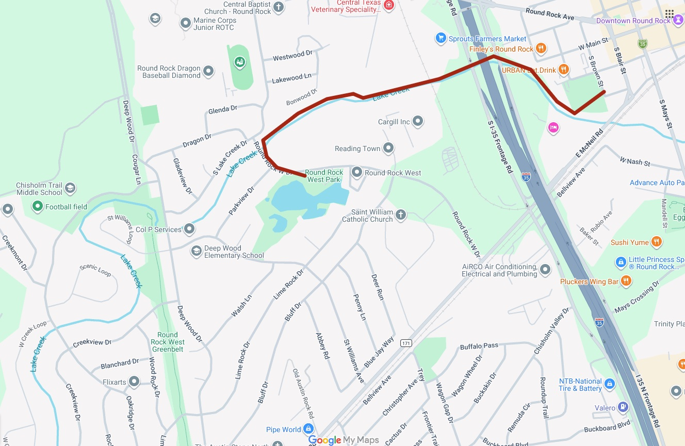

Shadow Brook · Round Rock West · Lake Creek
The neighborhood around 1603 West Creek Loop is woven together by trails, greenbelts, and a new city-funded trail connection that puts downtown Round Rock within walking distance — without touching a car.
On Your Doorstep
Trail Map
The red line traces the approximately one-mile Lake Creek Trail route — from the Round Rock West neighborhood (where West Creek Loop sits, bottom left), along the creek, through a new pedestrian underpass beneath I-35, across the new Lake Creek bridge, and into Centennial Plaza in downtown Round Rock. Sprouts Farmers Market, restaurants, and annual events like the Round Rock Arts Fest are now a walk away.

More to Explore
The Shadow Brook neighborhood has several more walking routes, side trails, and park connections. This page will be updated as we document each one — including creek-side paths, the route to Deep Wood Elementary, and informal nature trails through the greenbelt.